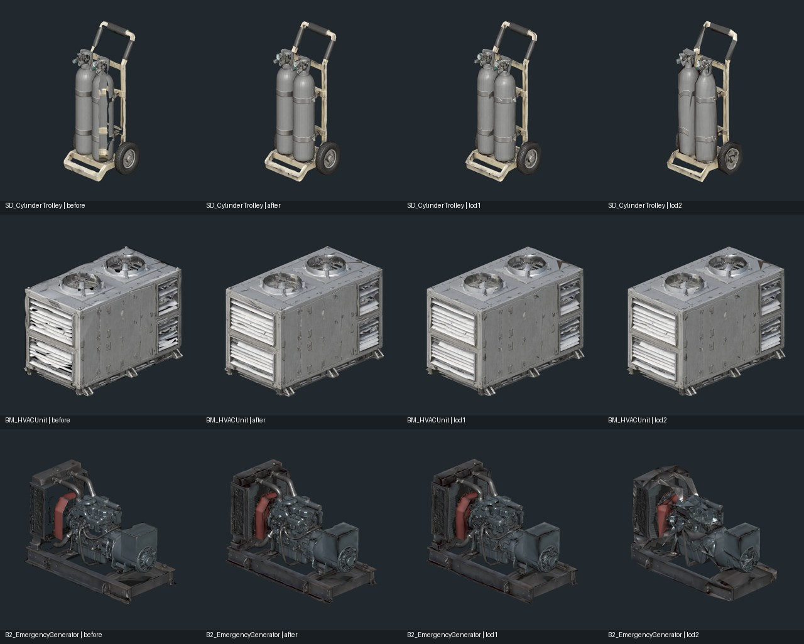
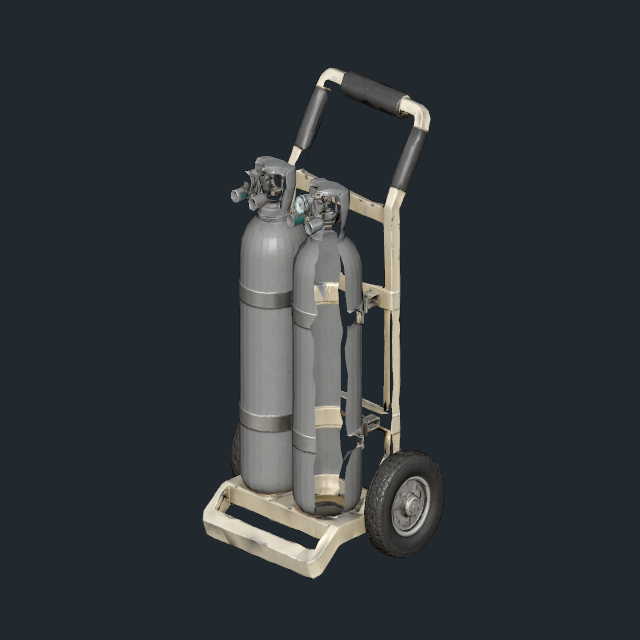
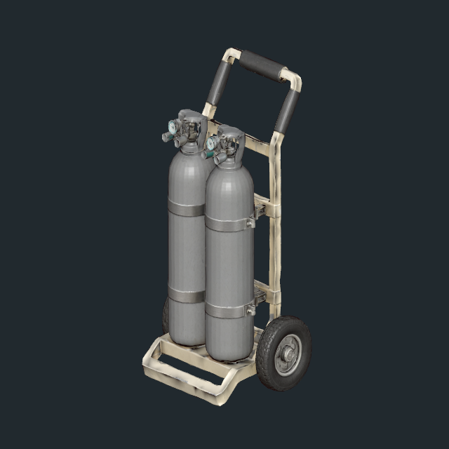
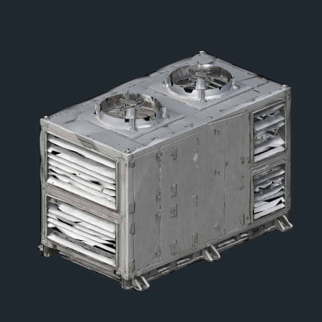
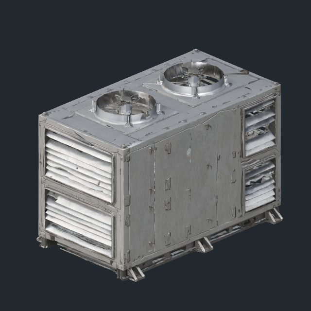
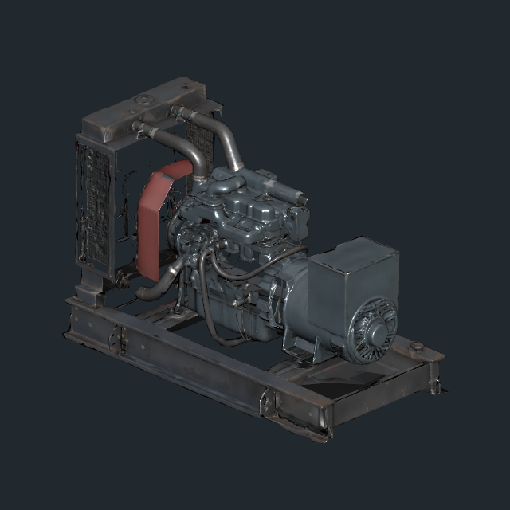
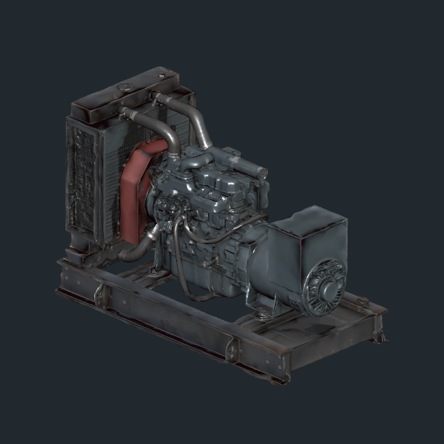

냉각 펌프 후속 보수: 이 기록에서 펌프를 제외했던 판단은 후속 검수로 정정했다. 펌프10개 형상·LOD 정렬 보수 결과를 함께 확인한다.
2026-11-11 · 작성자 송예찬
B2의 31종·194개 배치를 조사하고, VARCO 프랍 5종 중 3종·7개 배치의 손상된 면과 LOD를 보수했다. 기존 루트 위치·회전·크기와 충돌체194개를 유지하고 시각 메시를 해당 좌표에 맞췄다. 원본 FBX·재질·이전 깊이 충돌 보수는 보존했다.
| 프랍 | 위치 / 수량 | 보수 |
|---|---|---|
| 실린더 운반대 | W03·S01 / 2개 | 탱크와 프레임에 열린 틈. 손상 전 원본의 연결된 면으로 복구하고 3단계 LOD를 재생성했다. |
| 공조기 | N01 / 2개 | 기존 감면본의 열린 경계·비정상 면 접합을 보수 전 원본에서 재생성했다. 패널 노멀을 정리하고 2단계 LOD를 유지했다. |
| 비상 발전기 | W02 / 3개 | 라디에이터의 검은 면 갈라짐과 원거리 LOD의 벌어진 면. 면 방향·패널 노멀을 정리하고 정점 접합 후 3단계 LOD를 재생성했다. |
냉각 펌프의 축 보정 회전과 원심분리기의 배치는 이상이 없어 유지했다. 과거에 교체된 제어 콘솔은 현재 활성 외형을 기준으로 확인했다.
194개 루트·194개 충돌체 보존, 수정 배치7개·LOD 메시8개 참조 정상, 검증 오류0. 최고 LOD 외곽의 기존 배치 대비 최대 차이는 약0.004mm이며 바닥 높이는 동일하다. Blender에서 정점 접합 기준 열린 경계·과잉 연결·퇴화 면0을 확인했고, Unity에서 각 LOD를 강제 표시해 전후를 비교했다.
추가 FBX 3개 합계 3.30MiB. 신규 텍스처0, 모든 보수 메시의 Read/Write 꺼짐. 운반대 최고 LOD는12,208→8,000삼각형이며 공조기·발전기는 기존과 유사한 수준이다. 편집용 원본과 검수 이미지는 SourceAssets·Docs에 별도 보관한다.
열 순서: 수정 전 / 수정 후 LOD0 / LOD1 / LOD2. 공조기는 2단계이므로 마지막 두 열이 같다. 검수용 임시 조명을 사용했다.







이번 보수 직전 B2 백업과 비교했다. 기존 씬 오브젝트 삭제0, 변경은 부모의 자식 목록7개·LOD 연결7개·이전 Renderer 비활성19개이며 보수 Renderer19개를 추가했다. 원래 Renderer는 비활성으로 남겨 원본을 추적할 수 있다. 보호 파일100개 중 B2 씬만 변경됐다. 새 게임 코드·Player·Animator 변경과 커밋·push는 없다.
B2의 31종/194개 배치 중 현재 보이는 VARCO 5종을 출처와 3시점으로 확인했다.
다른 층의 VARCO 프랍 전체 검수를 완료한 기록이 아니다.
VARCO가 생성한 사용감·비대칭 형상은 유지했다. 공조기의 찌그러진 블레이드 전체를 새 형상으로 재설계한 것은 아니다.
에디터 시각·구조 검수이며 빌드 FPS 또는 전체 동선 Play 재검증을 의미하지 않는다.
저장된 B2 편집 씬. 사용자 근접 검수 후 다음 층 진행 여부를 따른다.